The purpose of person re-identification is to match pedestrians observed in non-overlapping camera views with
visual features. It has important applications in video surveillance, such as cross-camera tracking, multi-camera
event detection, and pedestrian retrieval. This problem is extremely challenging because it is difficult to
match the visual features of pedestrians captured in different camera views due to the large variations of lightings,
poses, viewpoints, image resolutions, photometric settings of cameras, and cluttered backgrounds.
The typical pipeline of a person re-identification system is shown below:
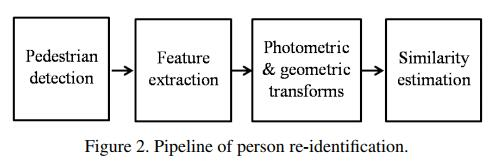
Person Re-idenfication
DeepReID: Deep Filter Pairing Neural Network for Person Re-Identification. (CVPR 2014) ☻
This paper propose a filter pairing neural network (FPNN) to jointly handle misalignment, photometric and geometric transforms, occlusions and background
clutter. This paper also explain each layers into the traditional method.
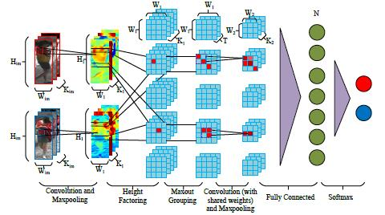
DML: Deep Metric Learning for Person Re-Identification. (2014)
This paper use a “siamese” deep part-based neural network to jointly learn the color feature, texture feature and metric in a unified framework.
The network has a symmetry structure with two sub-networks which are connected by Cosine function. To deal with the big variations of person images, binomial deviance
is used to evaluate the cost between similarities and labels, which is proved to be robust to outliers.
It has a modified version of this paper, which is:
Deep Metric Learning for Practical Person Re-Identification. ☻
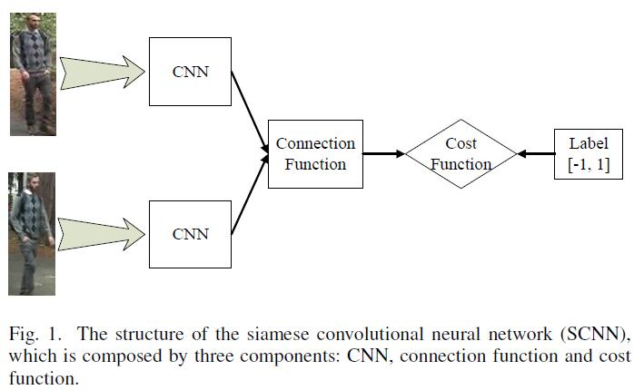
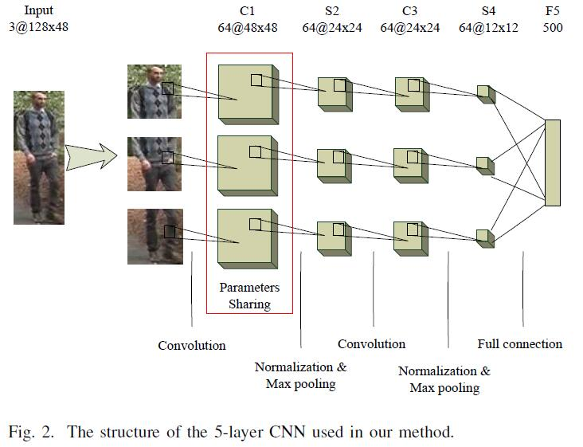
An Improved Deep Learning Architecture for Person Re-Identification. (CVPR 2015)
This paper propose a deep neural network architecture that formulates the problem of person re-identification as binary classification. It include: two layers
of tied convolution with max pooling, cross-input neighborhood differences, patch summary features, across-patch features, higher-order relationships,
and finally a softmax function to yield the final estimate of whether the input images are of the same person or not.
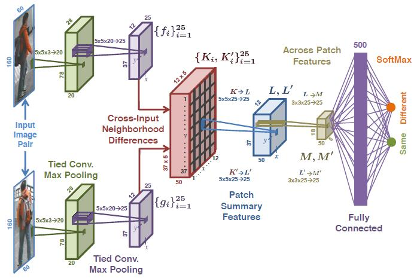
DGD: Learning Deep Feature Representations with Domain Guided Dropout for Person Re-identification. (CVPR 2016) ☻
This paper propose a Domain Guided Dropout algorithm to improve the feature learning procedure. This paper first mix all the domains together and train
a Convolutional Neural Network (CNN) to get a strong baseline. After the baseline model is trained jointly with datasets of all the domains, we replace
the standard Dropout with the Domain Guided Dropout and resume the training for several epochs.
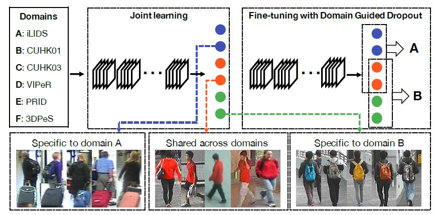
Person Re-Identification by Multi-Channel Parts-Based CNN with Improved Triplet Loss Function. (CVPR 2017)
This paper propose a novel multi-channel parts-based convolutional neural network (CNN) model under the triplet framework
for person re-identification. Specifically, the proposed CNN model consists of multiple channels to jointly learn both the
global full-body and local body-parts features of the input persons. The CNN model is trained by an improved triplet
loss function that serves to pull the instances of the same person closer, and at the same time push the instances belonging to
different persons farther from each other in the learned feature space.
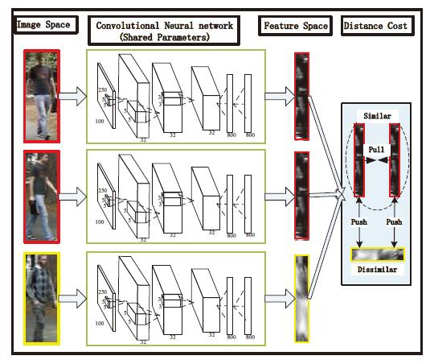
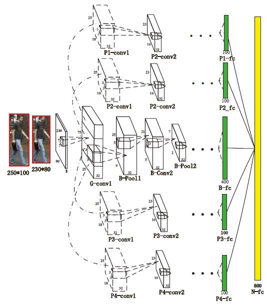
A Discriminatively Learned CNN Embedding for Person Re-identification. (2016)
This paper combine two models (verification and identification) to learn more discriminative pedestrian descriptors. The structure is similiar
with the DeepID (face verification) model.
Re-ranking Person Re-identification with k-reciprocal Encoding. (2017)
This paper regard re-ID as a retrieval problem. Given a probe person, we want to search in the gallery for images containing
the same person in a cross-camera mode. After an initial ranking list is obtained, a good practice consists of adding
a re-ranking step, with the expectation that the relevant images will receive higher ranks. Therefore, this paper introduce a
k-reciprocal encoding method for re-ID re-ranking. It consists of three steps. First, we encode the weighted k-reciprocal neighbor set into a vector to form the
k-reciprocal feature. Then, the Jaccard distance between two images can be computed by their k-reciprocal features.
Second, to obtain a more robust k-reciprocal feature, we develop a local query expansion approach to further improve
the re-ID performance. Finally, the final distance is calculated as the weighted aggregation of the original distance
and the Jaccard distance. It is subsequently used to acquire the re-ranking list.
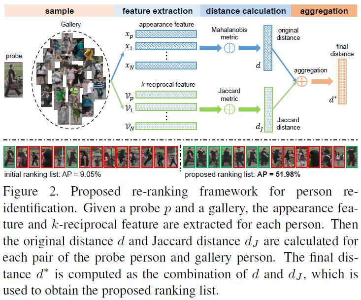
AlignedReID: Surpassing Human-Level Performance in Person Re-Identification. (2017)
TIn the learning stage, we have two branches for learning a global feature and local features jointly. In the local branch, we
align local parts by introducing a shortest path loss. In the inference stage, we discard the local branch and only extract
the global feature. We also adopt a mutual learning approach in the metric learning setting, to allow two models to learn better
representations from each other.
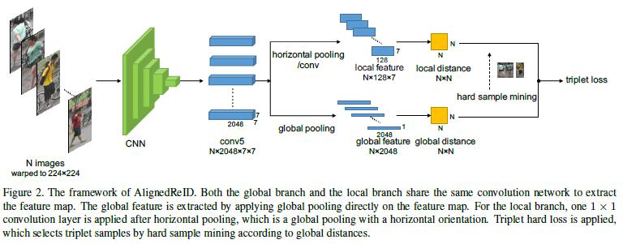
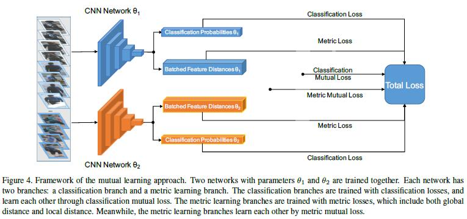
Person Search
Joint Detection and Identification Feature Learning for Person Search. (CVPR 2017)
This paper propose a new deep learning framework for person search. Instead of breaking it down into two separate tasks—pedestrian detection and person
re-identification, we jointly handle both aspects in a single convolutional neural network. An Online Instance Matching (OIM) loss function is proposed
to train the network effectively, which is scalable to datasets with numerous identities.